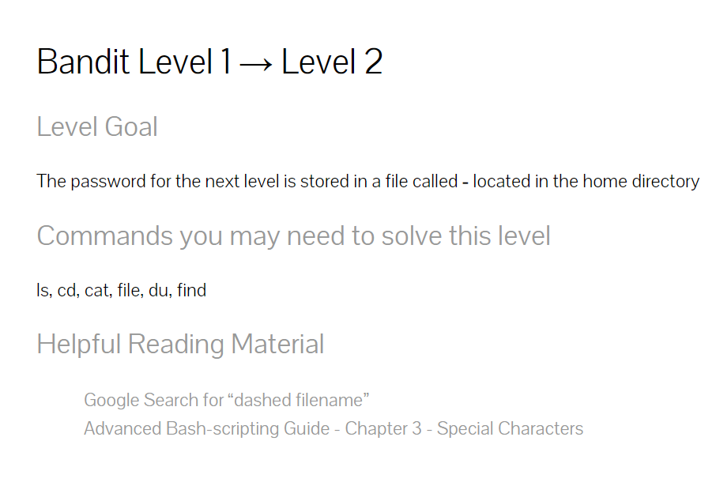
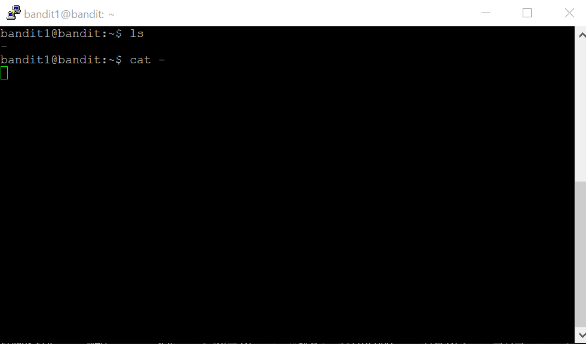
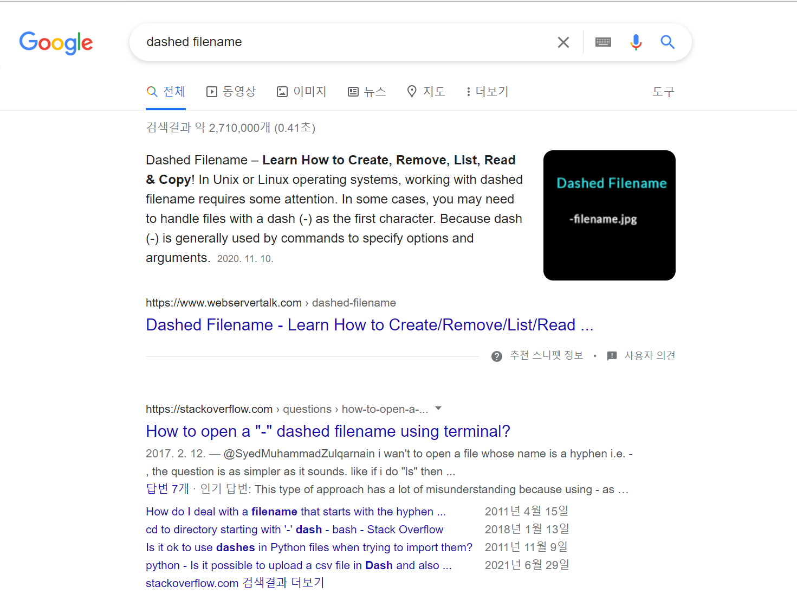
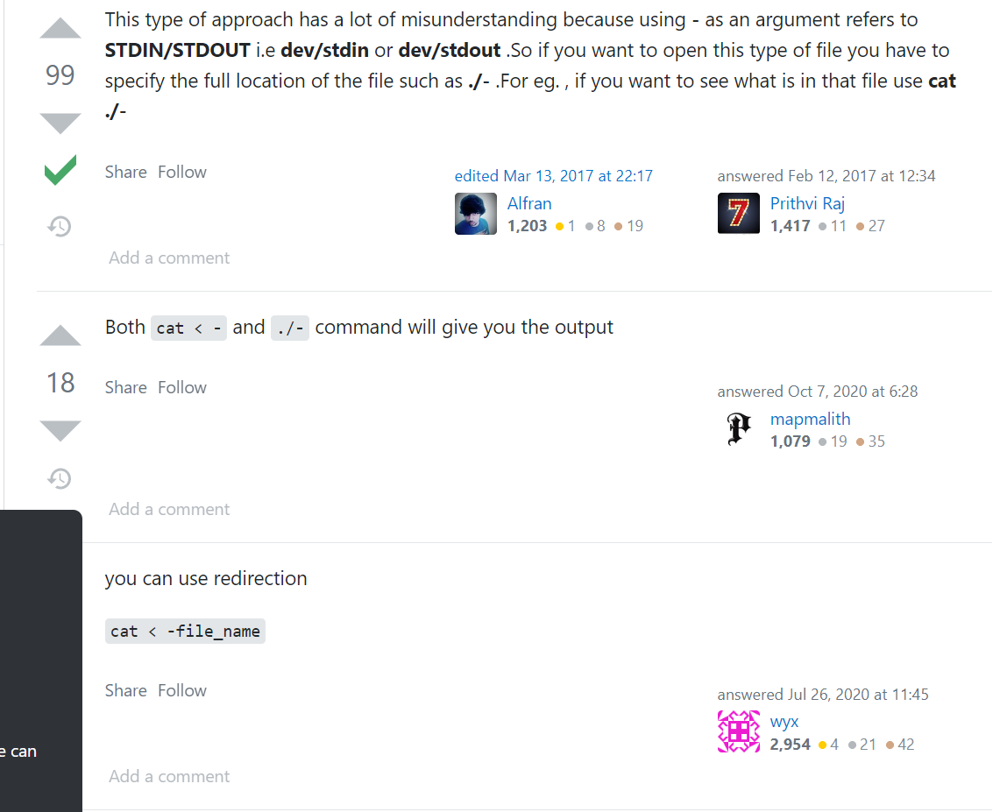
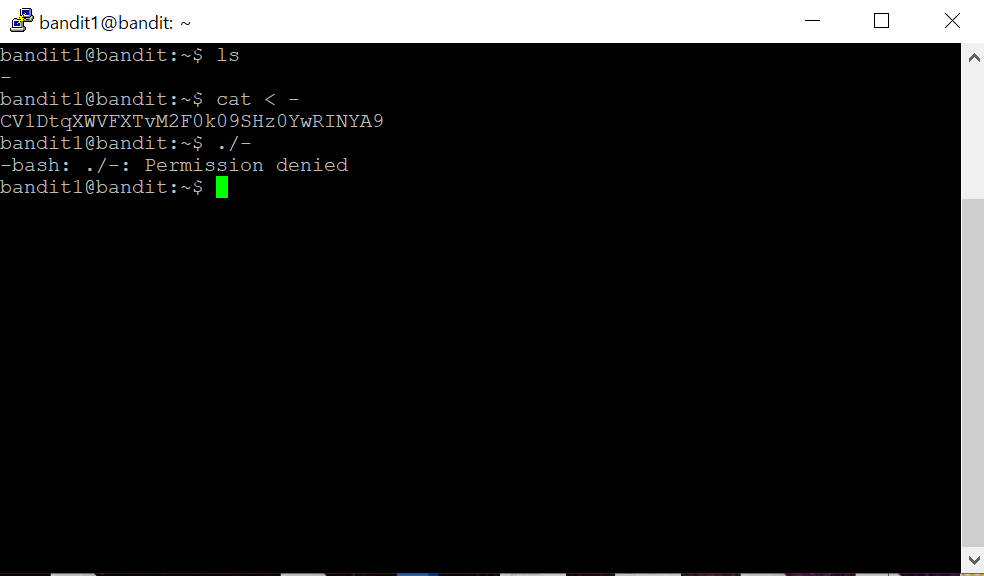

문제를 해석해 보니 다음 단계를 위한 패스워드가 -라는 이름의 파일에 있다고 합니다. 이것 또한 파일이니까 그냥 cat 명령어를 쓰면 되지 않을까요?
먼저 ls 명령어를 이용해서 존재하는 파일들을 확인해 보니
여기에 -라는 이름의 파일이 있군요.
이 파일을 cat 해보면

짜잔~~~
아무것도 나오지 않고(?) 오류가 납니다
일단 오류를 풀어주기 위해 Ctrl + C를 해줍니다.
뭐가 문제인걸까요? 아래에 Helpful Reading Material이라는게 있는데요.
검색해보니 두번째에 How to open a "-" dashed filename using terminal?이라는 제목의 글이 있네요.  들어가 보니 cat < - 혹은 ./ -를 하면 비밀번호를 찾을 수 있다고 하네요. 바로 고고씽 해볼까요?  cat < -는 잘 작동이 되는데 ./ - 는 안되나 보네요. 일단 나온 패스워드로 bandit2에 로그인 해보면 로그인에 성공하게 됩니다 인터넷에 수많은 정보를 모두 신뢰 할 수는 없다 라는 교훈을 얻고 다음 레벨로 넘어가 봅시다!